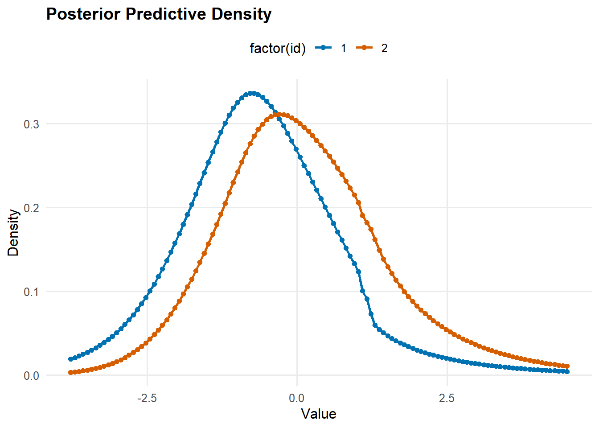
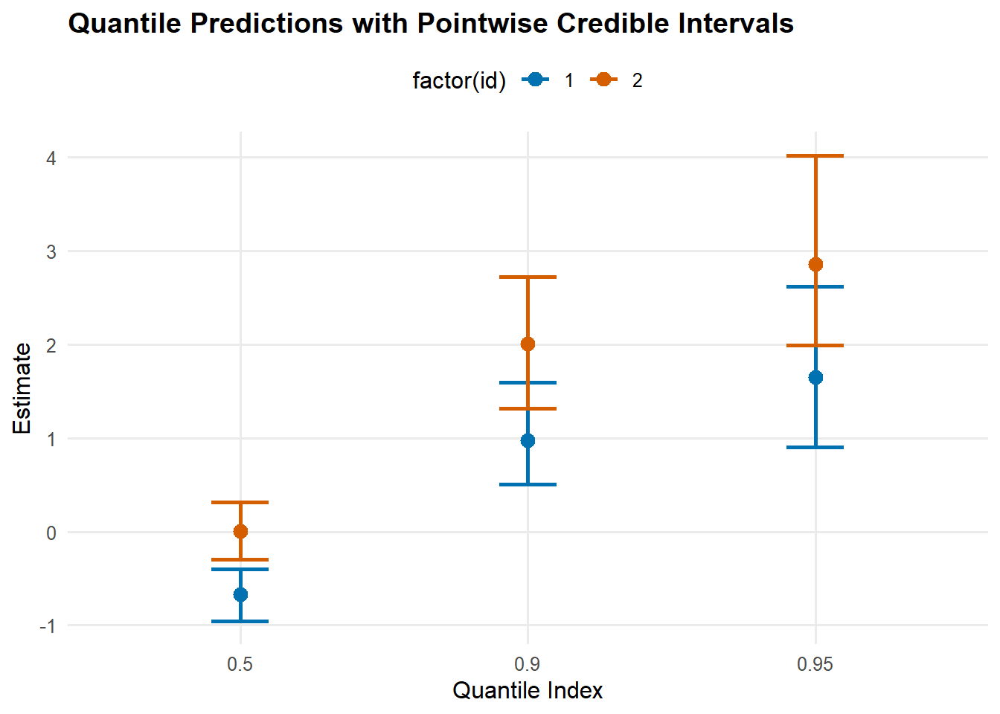

library(DPmixGPD)
# Example covariates
set.seed(1)
N <- 200
dat <- data.frame(
x1 = rnorm(N),
x2 = rbinom(N, 1, 0.5)
)
# Recommended: model.matrix() gives an intercept and consistent column names
X <- model.matrix(~ x1 + x2, dat)
# (Optional) scale continuous columns but keep intercept untouched
X[, "x1"] <- scale(X[, "x1"])Conditional DP Mixture Models
DPmixGPD supports conditional (covariate-dependent) density estimation by allowing one or more kernel parameters—and, optionally, selected tail parameters—to vary with a design matrix (X). The goal is to estimate an entire conditional distribution (F(y )), not just a mean curve.
This vignette focuses on how covariates enter the model, how to control that behavior via param_specs, and how to generate conditional predictions. For the bulk–tail spliced likelihood, GPD density/CDF definitions, and the overall “bulk + GPD tail” construction, see the Model fundamentals vignette in this package (we will refer to it rather than repeating the full splice derivation here).
Conditional mixture model
Let (y_i ) be an outcome and (_i ^p) a covariate vector. Under a truncated stick-breaking (SB) Dirichlet process mixture, DPmixGPD uses [ y_i z_i=j,_i k!(y_i j(i)), z_i (w_1,,w_J), ] with stick-breaking weights [ v_j (1,), w_1=v_1, w_j=v_j{<j}(1-v) (j), . ] This is the same DPM idea as in classic DP mixtures, but applied to conditional distributions; see, e.g., (escobar1995?; muller1996?). The key difference from the unconditional vignette is that (_j()) may depend on ().
DPmixGPD implements covariate dependence through per-parameter modes:
mode = "dist": parameter is random (drawn from a prior) but does not depend on (X).mode = "fixed": parameter is fixed at a constant value.mode = "link": parameter depends on (X) through a GLM-style link, with component-specific regression coefficients.
This is set separately for each bulk parameter (kernel parameter), and for selected tail parameters when GPD = TRUE.
A practical note about the design matrix (X)
DPmixGPD treats the matrix you pass as X as the design matrix used in linear predictors. It does not automatically add an intercept column. In practice you will almost always want model.matrix() so an intercept is included and factor coding is handled correctly.
A recommended workflow is:
- Build (X) using
model.matrix()(includes intercept by default). - Standardize/center continuous covariates (especially if you do not include an intercept).
- Keep the same column names and ordering for prediction.
predict()will validate them.
Which parameters can depend on (X)?
Kernel-specific parameter names are stored in the kernel registry. You can inspect them:
init_kernel_registry()
reg <- get_kernel_registry()
# Names of available kernels
names(reg)[1] "normal" "lognormal" "invgauss" "gamma" "laplace" "amoroso"
[7] "cauchy" # Bulk parameters for a specific kernel
reg$normal$bulk_params[1] "mean" "sd" reg$gamma$bulk_params[1] "shape" "scale"# Defaults for covariate behavior (when X is present)
reg$normal$defaults_X$mean
$mean$mode
[1] "link"
$mean$link
[1] "identity"
$sd
$sd$mode
[1] "dist"reg$gamma$defaults_X$shape
$shape$mode
[1] "dist"
$scale
$scale$mode
[1] "link"
$scale$link
[1] "exp"The registry is the authoritative source for (i) valid kernel names, (ii) bulk parameter names, and (iii) each kernel’s default covariate behavior.
Link-mode parameters: general form
If a bulk parameter () is assigned mode = "link", DPmixGPD uses a linear predictor and link function: [ {,ij} = i^{,j}, {ij} = g_({,ij}). ] Here ({,j}) is component-specific (indexed by mixture component (j)), so different mixture components can represent different conditional regimes.
Supported link functions include:
"identity": (= )"exp": (= ()) (useful for positive parameters)"softplus": (= (1+())) (also enforces positivity)"power": (= ^{}) (requireslink_power = kappa; use with care if () can be negative)
The best default for strictly-positive parameters is typically "exp" or "softplus".
Tail parameters under GPD
When GPD = TRUE, DPmixGPD uses a GPD tail above a threshold (see the Model fundamentals vignette for the splice and GPD density). For conditional variants, the following tail parameters can depend on (X):
gpd$threshold:fixed,dist, orlinkgpd$tail_scale:fixed,dist, orlinkgpd$tail_shape:fixedordist(nolinkmode)
Two distinct “link” behaviors exist for the threshold:
- Deterministic link: (u_i = g(_i^_u))
- Stochastic link via
link_dist = list(dist="lognormal", ...): (u_i (_i,_u)) with (_i=_i^_u)
This mirrors common nonstationary threshold modeling ideas in extremes (davison1990?; chavezdemoulin2005?), but placed inside the full Bayesian mixture framework (Behrens, Lopes, and Gamerman 2004; donascimento2012?).
Controlling covariate dependence with param_specs
build_nimble_bundle() accepts param_specs to override defaults. The structure is:
param_specs <- list(
bulk = list(
<bulk_param_1> = list(mode = "dist"/"fixed"/"link", ...),
<bulk_param_2> = list(mode = "dist"/"fixed"/"link", ...),
...
),
gpd = list(
threshold = list(mode = "dist"/"fixed"/"link", ...),
tail_scale = list(mode = "dist"/"fixed"/"link", ...),
tail_shape = list(mode = "dist"/"fixed", ...),
# optionally: sdlog_u if using lognormal threshold link_dist
sdlog_u = list(mode = "dist", dist = "invgamma", args = list(shape = 2, scale = 1))
)
)In mode = "link" you may specify:
link: one of"identity","exp","softplus","power"link_power: numeric, only for"power"beta_prior: a list describing priors for regression coefficients, e.g.list(dist="normal", args=list(mean=0, sd=2))
In mode = "dist" you specify:
dist: e.g.,"normal","gamma","invgamma", etc. (used internally in NIMBLE code generation)args: named list of distribution parameters
Backend note: SB vs CRP with covariates
DPmixGPD supports two backends:
backend = "sb": truncated stick-breaking mixture (default for covariate-dependent parameters)backend = "crp": finite CRP representation
For conditional models, the SB backend is recommended. Internally, the CRP backend avoids default link-mode bulk parameters because deterministic, cluster-indexed covariate nodes can interfere with NIMBLE’s CRP samplers. If you want covariate links on bulk parameters, you should generally use backend = "sb".
Worked example: conditional normal kernel with a GPD tail
We simulate data where the conditional mean depends on (X), fit a conditional model, then generate conditional predictions.
# Simulate a simple signal + heavy-tailed noise
set.seed(2)
beta <- c(-0.3, 0.8, -0.6) # coefficients for (Intercept, x1, x2)
mu <- drop(X %*% beta)
y <- mu + rt(N, df = 3) # heavy-tailed noise
mcmc <- list(niter = 400, nburnin = 100, thin = 2, nchains = 1, seed = 1)
bundle <- build_nimble_bundle(
y = y,
X = X,
backend = "sb",
kernel = "normal",
GPD = TRUE,
components = 6,
mcmc = mcmc
)
fit <- run_mcmc_bundle_manual(bundle, show_progress = FALSE, quiet = TRUE)Defining model [Note] Registering 'dNormGpd' as a distribution based on its use in BUGS code. If you make changes to the nimbleFunctions for the distribution, you must call 'deregisterDistributions' before using the distribution in BUGS code for those changes to take effect.Building modelSetting data and initial valuesChecking model sizes and dimensions [Note] This model is not fully initialized. This is not an error.
To see which variables are not initialized, use model$initializeInfo().
For more information on model initialization, see help(modelInitialization).Checking model calculationsCompiling
[Note] This may take a minute.
[Note] Use 'showCompilerOutput = TRUE' to see C++ compilation details.
Compiling
[Note] This may take a minute.
[Note] Use 'showCompilerOutput = TRUE' to see C++ compilation details. [Warning] To calculate WAIC, set 'WAIC = TRUE', in addition to having enabled WAIC in building the MCMC.running chain 1...Compiling
[Note] This may take a minute.
[Note] Use 'showCompilerOutput = TRUE' to see C++ compilation details.Calculating WAIC.A quick summary of the fitted object:
print(fit)MixGPD fit | backend: Stick-Breaking Process | kernel: Normal Distribution | GPD tail: TRUE
n = 200 | components = 6 | epsilon = 0.025
MCMC: niter=400, nburnin=100, thin=2, nchains=1
Fit
Use summary() for posterior summaries; plot() for diagnostics; predict() for predictions.Conditional prediction
For conditional models, predict() uses x for the prediction design matrix (X_{}). For type = "density" or "survival", you must also provide y as the grid of outcome values where the function is evaluated.
# Prediction points: two covariate profiles
newdat <- data.frame(x1 = c(-1, 1), x2 = c(0, 1))
Xpred <- model.matrix(~ x1 + x2, newdat)
Xpred[, "x1"] <- scale(Xpred[, "x1"]) # apply same scaling convention
ygrid <- seq(quantile(y, 0.01), quantile(y, 0.99), length.out = 120)
dens_pred <- predict(fit, x = Xpred, y = ygrid, type = "density", cred.level = 0.95)
q_pred <- predict(fit, x = Xpred, type = "quantile", index = c(0.5, 0.9, 0.95), cred.level = 0.95)The returned objects contain point estimates and uncertainty summaries. For example:
# Quantile predictions for each covariate profile
q_pred$fit estimate index id lower upper
1 -0.67096 0.50 1 -0.956 -0.403
2 0.00531 0.50 2 -0.299 0.315
3 0.97010 0.90 1 0.507 1.598
4 2.00828 0.90 2 1.315 2.720
5 1.64707 0.95 1 0.899 2.620
6 2.85975 0.95 2 1.995 4.021You can also plot prediction objects directly:
plot(dens_pred)
plot(q_pred)
(Plots are enabled in this vignette build; for faster local iteration you can temporarily set this chunk to eval=FALSE.)
What to tune in practice
Decide which parameters should depend on (X). A good start is to link a location parameter (e.g.,
meanormeanlog) and keep scale/shape parameters indistmode, then add complexity if diagnostics warrant it.Use links consistent with support:
"exp"/"softplus"for strictly positive parameters.Prefer
backend = "sb"for covariate links. Usebackend = "crp"mainly for unconditional models or when you intentionally keep bulk parameters indistmode.Increase
components,niter, andnburninfor real analyses. The small values in this vignette are chosen only to keep examples quick.
References
Behrens, Cibele N., Hedibert F. Lopes, and Dani Gamerman. 2004. “Bayesian Analysis of Extreme Events with Threshold Estimation.” Statistical Modelling 4 (3): 227–44. https://doi.org/10.1191/1471082x04st075oa.